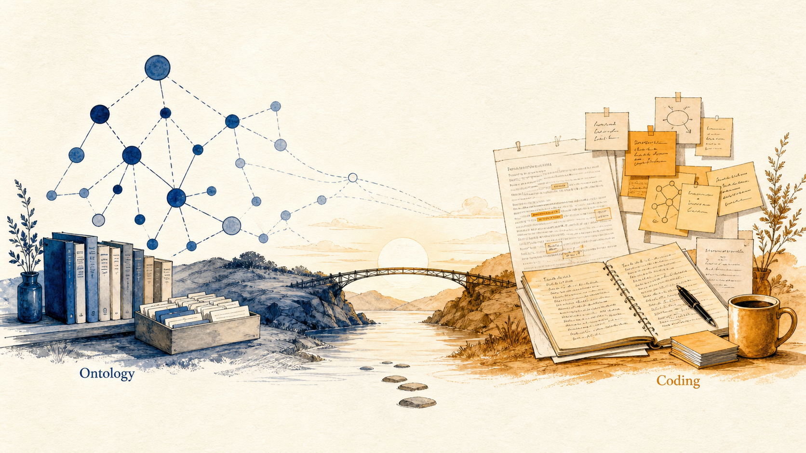
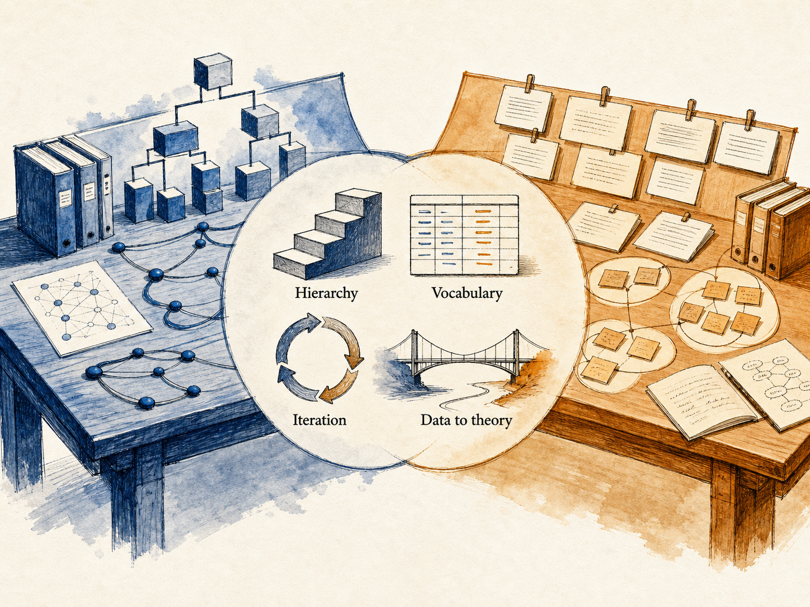
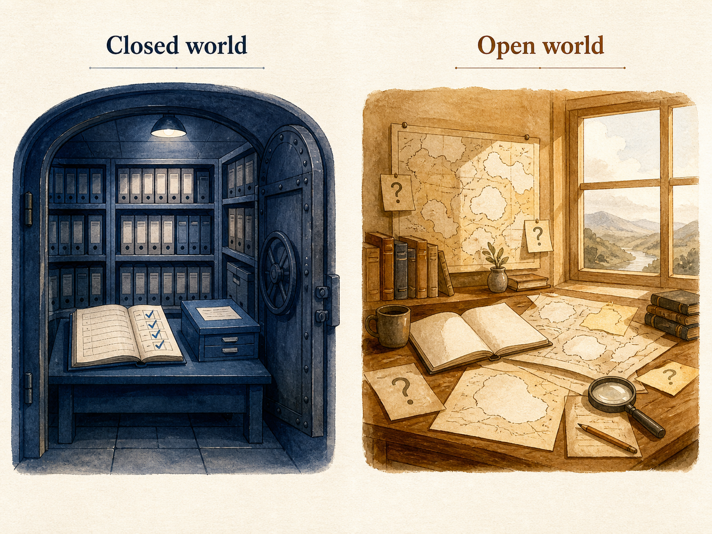
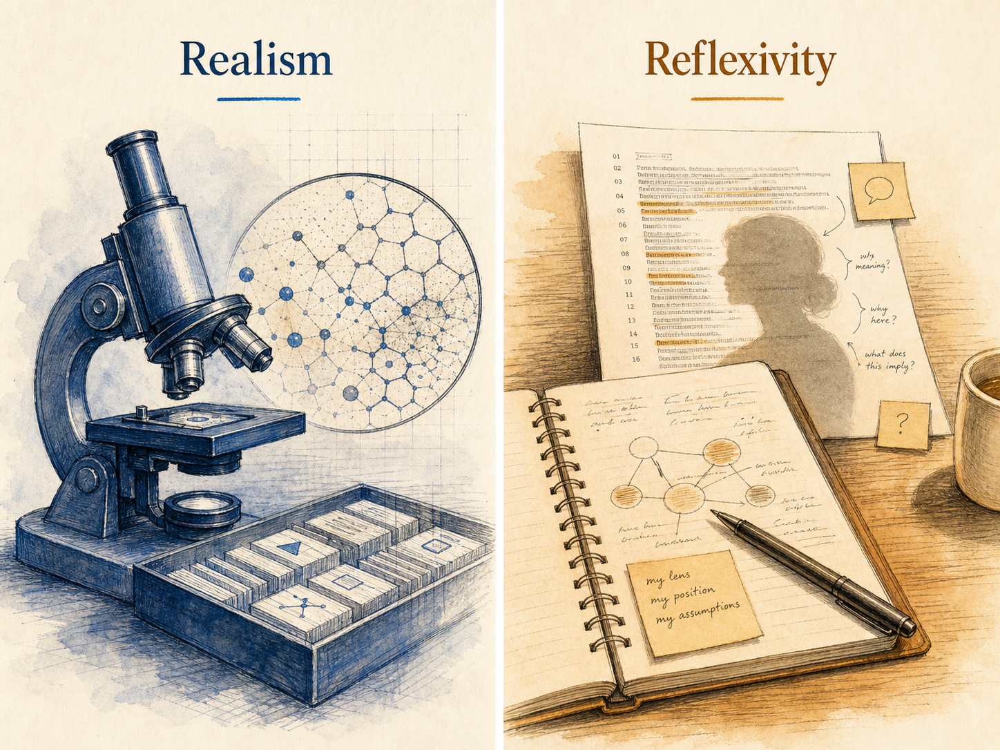
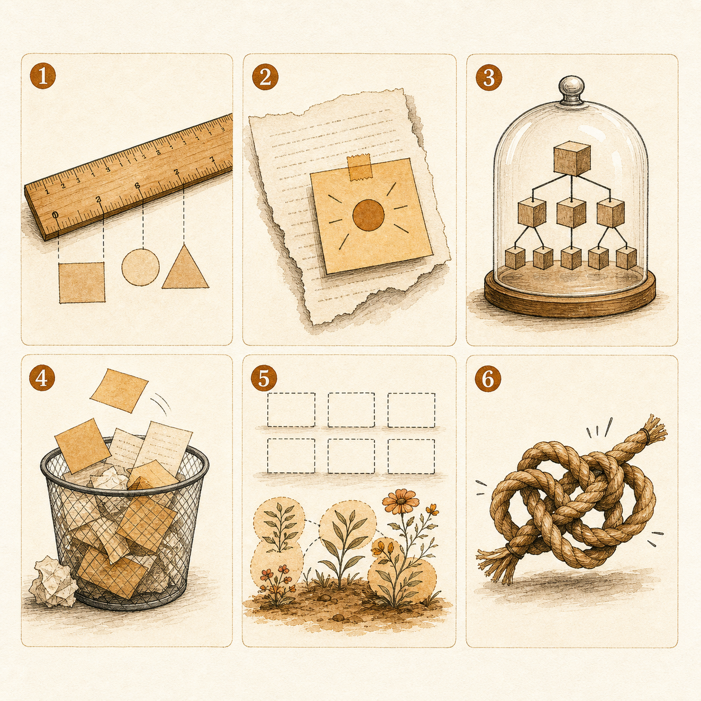
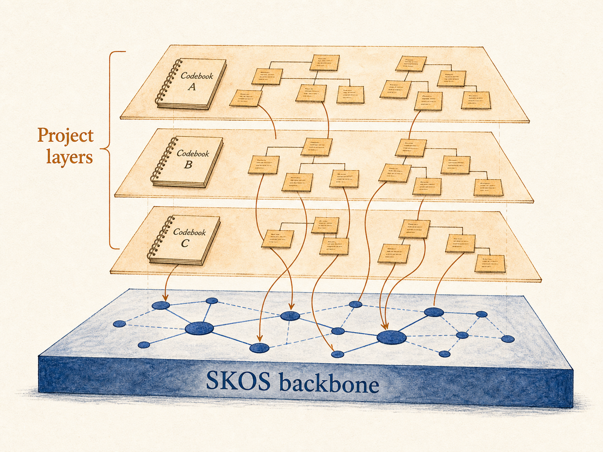
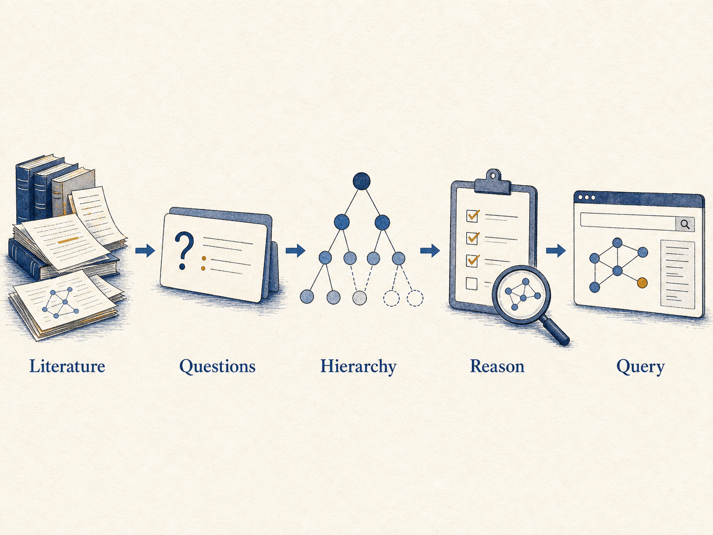
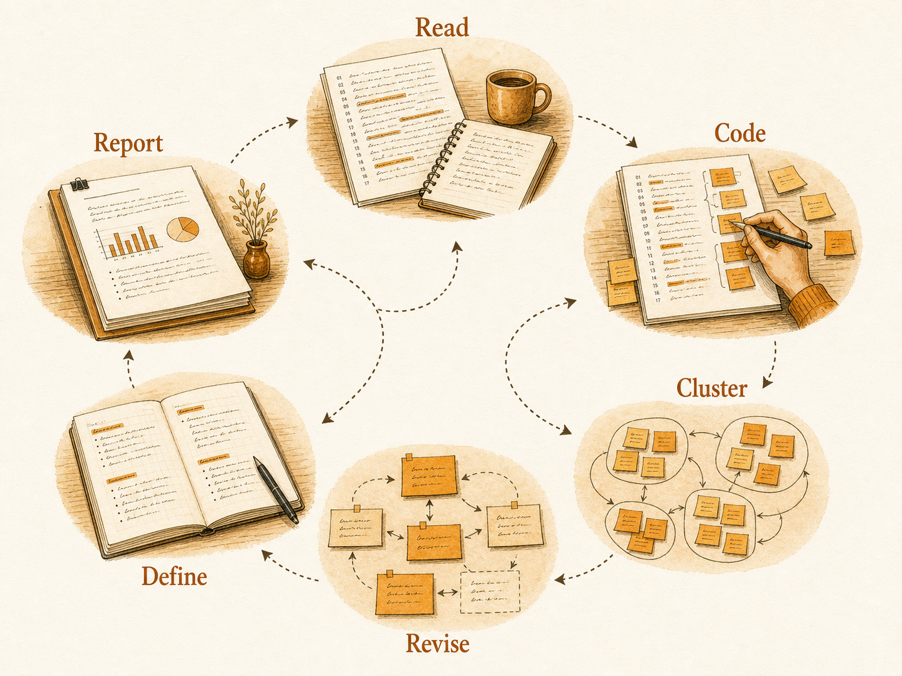
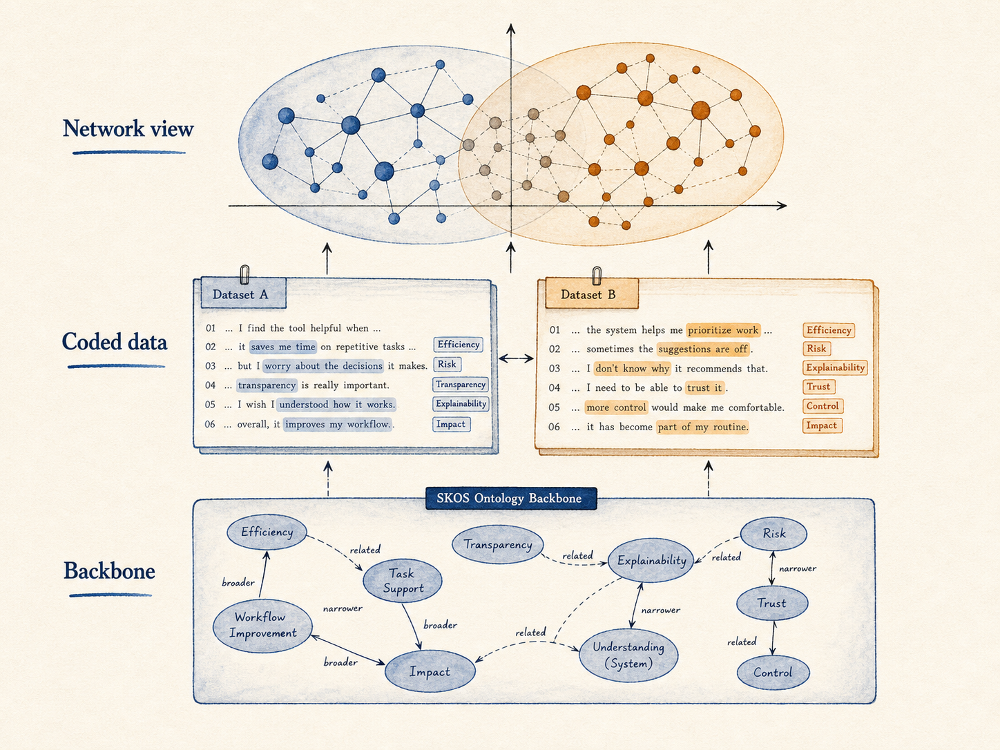

ADDIE Lab Methodological Handbook · v0.1
Ontology and Qualitative Coding Schemes — An Epistemological Bridge
A practical onboarding guide for graduate AI researchers who already know knowledge graphs but are new to interpretive and reflexive qualitative methods.
§1Why this guide exists ~3 min
Most AI researchers meet qualitative coding for the first time the same way: a collaborator hands them a stack of interview transcripts and says "we need codes." They reach for the closest metaphor in their toolbox — annotation. They fix a label set, instruct a model (or a teammate) to apply it, and compute agreement. Job done.
That move flattens a research practice into a labeling task, and the cost is methodological. A coding scheme is not a fixed schema applied to data. It is an instrument that changes as the analysis proceeds, that registers researcher judgment as a feature rather than as noise, and that survives or fails on intersubjective grounds the annotation literature does not measure (Charmaz, 2014; Braun & Clarke, 2019; Saldaña, 2021). When AI researchers treat coding as annotation, they import the wrong success criteria — high κ on a frozen taxonomy — and miss the moves that make qualitative work warranted.
This guide does not rename the method "epistemological coding." The standard umbrella term remains qualitative coding. The epistemological issue is the commitment behind the coding: interpretive judgment, reflexive documentation, and warranted claims about meaning rather than mere label assignment.
Recent attempts to use large language models for thematic analysis have made this gap visible. Xiao, Yuan, Liao, Abdelghani, and Oudeyer (2023) showed that GPT-3 can perform deductive coding against a fixed codebook with fair-to-substantial expert agreement, but carefully limited their claim. De Paoli (2024) ran an entire inductive thematic analysis with GPT-3.5-Turbo and read his own results as a provocation: the LLM produced output that looked like Braun-and-Clarke phases while leaving familiarization and interpretive engagement as live methodological questions. Christou (2024), Naeem, Smith, and Thomas (2025), and Schroeder et al. (2025) extend the same warning. The problem is not that LLMs cannot label; it is that automation can hollow out the researcher's time-with-data, which is where qualitative warrant actually lives.
The opposite confusion is just as common. Qualitative researchers sometimes treat a finished codebook as if it were a domain ontology and try to publish it as machine-readable infrastructure. It rarely is. A codebook is shaped to its corpus, encodes the analyst's evolving categories, and rests on trustworthiness procedures (credibility, transferability, dependability, confirmability — Lincoln & Guba, 1985) that have no formal-logic counterpart.
This handbook is written to keep both errors from happening. It
treats formal ontology and interpretive
qualitative coding scheme as two distinct ways of organizing meaning
that operate at different layers of the meaning stack, and shows
where they meet, where they part, and how to combine them honestly.
It is written for graduate AI researchers — readers who already
recognize owl:Class and rdfs:subClassOf,
who can prompt an LLM, but who are likely to be reading Charmaz or
Saldaña for the first time.
Treating a coding scheme as a frozen label set and reporting only inter-rater κ is the qualitative equivalent of evaluating a knowledge-graph project by the count of triples. It tells you almost nothing about whether the work is good.
§2Two honest definitions ~5 min
2.1 Ontology, in the sense AI researchers use the word
Gruber's (1993) widely cited formula — "an ontology is an explicit specification of a conceptualization" — was tightened a few years later by Studer, Benjamins, and Fensel (1998) to "a formal, explicit specification of a shared conceptualization." The added qualifiers carry weight. Formal means the ontology is machine-interpretable and supports inference. Explicit means the types and constraints are written down rather than left tacit. Shared means the ontology is consensual infrastructure for a community, not a private model.
Guarino (1998) distinguishes the philosophical discipline (Ontology with a capital O — the study of what exists) from the artifacts information scientists build (an ontology, an artifact). Smith and Welty (2001) bridge the two and argue that careful ontology engineering profits from the meta-property analysis philosophers developed (rigidity, identity, unity — the OntoClean tradition).
Operationally, an ontology has two parts. The T-Box ("terminology box") declares classes, properties, and the axioms that bind them. The A-Box ("assertion box") populates those classes with individuals. A knowledge graph is, in most current usage, a richly populated A-Box governed by an explicit T-Box (Hogan et al., 2021).
Three core W3C languages span an expressivity gradient:
- RDF / RDFS — triples and lightweight class hierarchies. Decidable, low ceiling.
- OWL 2 — description-logic ontologies with reasoners that check consistency, classify, and compute entailments.
- SKOS — controlled vocabularies (thesauri,
taxonomies, classification schemes) with deliberately
weaker semantics:
skos:broaderis not equivalent tordfs:subClassOf. SKOS exists precisely to host evolving, plural, and contested vocabularies (Miles & Bechhofer, 2009). It is — as we will see in §7 — the natural format for codebook-style structures.
2.2 Qualitative coding scheme, in the sense qualitative researchers use the word
A code in the qualitative tradition is "most often a word or short phrase that symbolically assigns a summative, salient, essence-capturing, and/or evocative attribute for a portion of language-based or visual data" (Saldaña, 2021). The coding scheme (or codebook) is the organized set of those codes — typically with definitions, inclusion criteria, exclusion criteria, exemplar quotations, and analytic memos. It is not merely a classification table; it is a documented trace of how the analyst moved from raw material to defensible interpretation.
Coding schemes come in two main flavors:
- A priori / deductive — codes are derived from theory or prior literature and applied to data. The codebook is fixed before coding starts and is the workhorse of content analysis.
- Emergent / inductive — codes are generated from the data through cycles of close reading, comparison, and refinement. This is the stance of grounded theory (Glaser & Strauss, 1967; Charmaz, 2014) and reflexive thematic analysis (Braun & Clarke, 2006, 2019).
Most projects mix the two. Saldaña (2021) catalogs more than 35 first-cycle methods (descriptive, in-vivo, process, values, emotion, magnitude, simultaneous, etc.) and second-cycle methods (pattern, focused, axial, theoretical) that compress and re-organize the first-cycle codes into themes and categories. Themes are not codes; themes are what you build from codes after multiple passes.
2.3 Comparison
| Formal ontology | Interpretive qualitative coding scheme | |
|---|---|---|
| Primary unit | Class, property, individual | Code, theme, category |
| Format | RDF / OWL / SKOS — machine-readable, formal-logic axioms | Codebook — natural-language definitions, examples, memos |
| Author intent | Shared community vocabulary, interoperability | Local instrument, fitted to corpus and research question |
| Lifecycle | Versioned releases, deprecation policies, OntoClean review | Iterative refinement during analysis; rarely shipped as standalone artifact |
| Truth claim | "These are the kinds of things that exist in this domain" | "This is how these informants made sense of this phenomenon, in this context" |
| Validation surface | Logical consistency, competency questions, reuse | Inter-rater reliability, member checking, trustworthiness, reflexivity |
2.4 The artifacts side by side
For an AI reader, it helps to see what a small fragment of each actually looks like. The Turtle on the left is a SKOS-style controlled vocabulary fragment for affective states; the codebook on the right is a Saldaña-style entry from a hypothetical study of student forum posts about AI tools.
@prefix skos: <http://www.w3.org/2004/02/skos/core#> .
@prefix ex: <https://example.org/affect#> .
ex:Anxiety a skos:Concept ;
skos:prefLabel "anxiety"@en ;
skos:altLabel "worry"@en, "apprehension"@en ;
skos:broader ex:NegativeEpistemicEmotion ;
skos:scopeNote "State of unease about an
uncertain outcome relevant to learning."@en .
ex:Confusion a skos:Concept ;
skos:prefLabel "confusion"@en ;
skos:broader ex:NegativeEpistemicEmotion ;
skos:related ex:Anxiety .CODE: AI-trust-hedge
DEFINITION:
Statements where the student claims to use
the AI tool but qualifies that claim with a
warrant about why the answer should still be
doubted.
INCLUSION:
- explicit modal verbs ("might be wrong",
"could be hallucinating")
- reference to verifying with another source
EXCLUSION:
- generic disclaimers about AI in general
- statements about other students' use
EXAMPLE:
"I used Claude for the first draft but I
cross-checked the citations because it
sometimes makes them up."
MEMO 2026-04-12:
Look for trust-hedge co-occurring with
identity-claims about being a 'good student'.
The Turtle is a declarative, machine-checkable artifact. A reasoner
will tell you whether ex:Anxiety and
ex:Confusion are consistent under your axioms. The
codebook is an instrument shaped by analytic decisions; its
MEMO field is the visible trace of researcher reasoning
— and is also the part that has no analog in the Turtle file at all.
§3Shared DNA ~3 min
Before we draw the split, it pays to name what the two traditions share. Both are infrastructure for organizing meaning, and both have to handle the same hard problems.
Hierarchical organization. Ontologies use
rdfs:subClassOf; coding schemes use the relation
between codes, categories, and themes. Both move from finer-grained
to coarser-grained concepts because that is how human
sense-making compresses.
Community vocabulary negotiation. Studer et al.'s (1998) "shared" qualifier and Saldaña's repeated insistence that a codebook be discussed and negotiated with collaborators arrive at the same point from opposite directions. Categories that no one but the original author can apply are weak categories.
Iterative refinement. Ontology engineering methodologies — METHONTOLOGY (Fernández-López, Gómez-Pérez, & Juristo, 1997), NeOn (Suárez-Figueroa, Gómez-Pérez, Motta, & Gangemi, 2012) — explicitly iterate specification, conceptualization, formalization, and evaluation. The grounded-theory constant-comparative method (Glaser & Strauss, 1967) and Braun and Clarke's (2006) six-phase TA both iterate at the level of the analyst's reading. The rhythm is the same; the medium differs.
Mediating the data-theory gap. Both artifacts sit between raw data and the abstract theoretical claims a researcher wants to make. They are the place where data becomes organized enough to support a claim.
The most influential book that names this shared territory is Bowker and Star's (1999) Sorting Things Out: Classification and Its Consequences. Their argument is simple and uncomfortable: every classification system — the ICD, the Nursing Interventions Classification, race classifications under apartheid, viral taxonomies — encodes commitments that valorize some points of view and silence others. The choice is never whether to be political, only whether to be honest about it. AI researchers who treat ontology engineering as neutral knowledge representation owe themselves a serious read of Chapter 1.
Nelson's (2020) computational grounded theory formalizes the convergence on the methods side. She proposes a three-step framework: (1) pattern detection through unsupervised machine learning; (2) pattern refinement through qualitative deep reading; (3) pattern confirmation through further computational analysis. Computation augments interpretive engagement; it does not replace it. The framework is a clean answer to "is there a principled way to combine these traditions?"

Read the same problem, twice. Before treating ontology and coding as different, ask what each is trying to do for your study: organize a community vocabulary? Stabilize an analytic instrument? Mediate between raw data and a theoretical claim? Both do all three. The choice of artifact is downstream of which layer you are working at.
§4The epistemological split ~5 min
The shared DNA is real, but the split is real too — and it is epistemic, not merely stylistic. AI researchers tend to import assumptions from supervised learning that misfit qualitative work. Four contrasts are worth memorizing.
4.1 Closed-world vs. open-world
Reiter (1978) introduced the closed-world assumption (CWA): in a
complete database, anything not provable is false. Most relational
systems and most supervised classifiers behave this way — they
return a label per input. The Semantic Web languages
deliberately took the opposite stance. OWL adopts the
open-world assumption (OWA): absence of evidence is
not evidence of absence. If your ontology does not entail
":patient_42 ex:hasDiagnosis ex:Diabetes," that does
not mean the patient is non-diabetic; it means we do not know.
Qualitative researchers operate in something close to OWA out of habit. A code that did not appear in this corpus is not absent from the world — it is absent from this corpus under this analyst's gaze. Reflexive TA goes further and refuses the saturation criterion because of this (Braun & Clarke, 2019; see §4.4). AI researchers fluent in OWA have the conceptual furniture to understand this stance; they often do not realize they already do.

4.2 Formal logic vs. interpretive judgment
An OWL reasoner can mechanically derive that
ex:Confusion ⊑ ex:NegativeEpistemicEmotion entails
certain facts. A qualitative analyst arguing that a particular
utterance is an instance of "AI-trust-hedge" cannot. The warrant for
the second move is interpretive — it requires the analyst to make
the case that this utterance, in this context, by
this speaker, fits the code. The strength of the argument
rests on close reading, comparative reasoning, and the analyst's
positioning, none of which is logically necessary in the formal
sense.
4.3 Normative consensus vs. emergent context-bound
| Ontology orientation | Coding-scheme orientation | |
|---|---|---|
| Ideal artifact | A vocabulary so well-engineered that other researchers reuse it | An instrument well-fitted to this dataset and research question |
| Authority | Community standards bodies, OBO Foundry, W3C | The author + co-authors + the community of similar studies |
| Mode of growth | Versioned, governed, sometimes legislated | Emergent, refined through use, often discarded after publication |
| Failure mode | Incoherence with the rest of the linked-data web | Failure to be recognizable to participants or peers as a faithful reading |
4.4 Realism vs. reflexivity — the live argument
The deepest split is philosophical. Smith and Welty (2001) and the Applied Ontology tradition lean realist: a well-engineered ontology approximates structure that exists independently of the engineer. Bowker and Star (1999), and constructivist grounded theorists like Charmaz (2014), insist the opposite — categories are built, not found; analyst subjectivity is constitutive, not noise.
Trustworthiness in qualitative work (Lincoln & Guba, 1985) is the operationalization of taking reflexivity seriously. Instead of validity-as-correspondence, the criteria are credibility (do the findings ring true to participants?), transferability (can a reader port them to another context?), dependability (would another analyst, given the same data and audit trail, follow the reasoning?), and confirmability (can the analyst's role in the conclusions be inspected?). None of these reduce to a number.

Glaser and Strauss (1967) and Charmaz (2014) treat saturation — the point at which new data stops yielding new categories — as a foundational stopping criterion. Braun and Clarke (2019) explicitly reject it for reflexive TA: they argue themes are generated, not found, and that information redundancy is not a meaningful concept when the analyst's interpretive role is taken seriously. Pick a side consciously; do not invoke "saturation" without saying which tradition you are in.
§5Operational differences ~5 min
5.1 What counts as ground truth
In ontology engineering, ground truth is logical: the ontology either entails the competency questions or it does not. In coding, there is no ground truth in this sense. Two trained, reflexive analysts can read the same transcript, generate slightly different codes, and both be defensibly right. This is not a bug; it is the topology of interpretive work.
This is why "make the coding more objective" is usually the wrong instruction. The target is not objectivity by analyst removal. The target is accountable interpretation: clear code definitions, visible memo trails, disciplined comparison, negative-case attention, and enough reflexive documentation for readers to follow how the claim was produced.
5.2 Validation, side by side
| Ontology validation | Coding-scheme validation | |
|---|---|---|
| Internal coherence | Reasoner-checked logical consistency; no entailment of contradictions | Codes mutually intelligible to a coding team; codebook memos cohere |
| Sufficiency | Competency questions are entailed by axioms (Grüninger & Fox, 1995) | Analytic claims grounded in the data; negative cases addressed |
| Reliability | Reuse and citation by other ontologies; OntoClean meta-property checks | IRR (Cohen's κ, Krippendorff's α) for codebook TA; not the same target for reflexive TA |
| External warrant | Linkage to upper ontologies (BFO, DOLCE) or community standards | Member checking; participant recognition; analytic generalizability |
| Author position | Engineer ideally invisible (the schema is what it is) | Researcher reflexivity is a first-class output (Lincoln & Guba, 1985) |
5.3 Competency questions and research questions
Grüninger and Fox (1995) introduced competency questions: natural-language queries the ontology must be able to answer. They are the closest formal-ontology analogue to a research question. Grad students fluent in CQs but new to qualitative methods can use the parallel as a learning device.
# For a course-design ontology
CQ-01: Which learning outcomes are
addressed by which assessments?
CQ-02: Which assessments target the
same outcome with different
cognitive levels?
CQ-03: Which course modules contain
no formative assessment for
their stated outcomes?# For a TA of student forum posts
RQ-01: How do undergraduates account
for using AI tools in courses
that prohibit them?
RQ-02: What kinds of trust hedges
appear when students disclose
AI use to peers vs. instructors?
RQ-03: How do these accounts shift
across the semester?Both lists discipline the artifact downstream. CQs constrain which classes and properties the ontology must support; RQs constrain what kinds of codes will eventually warrant attention. The structural parallel is real, but it can mask a difference: CQs are answered by the ontology mechanically; RQs are answered by the analyst, with the codebook as evidence.
5.4 Reliability indices, used carefully
Cohen's κ and Krippendorff's α correct raw agreement for chance. McHugh (2012) gives a working scale: < 0.40 is poor, 0.60–0.79 moderate, 0.80–0.90 strong. Hayes and Krippendorff (2007) recommend α ≥ 0.80 for tentative claims and α ≥ 0.667 for exploratory work. Both indices are sensitive to category prevalence — high agreement on rare codes can yield paradoxically low κ — so single numbers rarely tell the full story.
These indices are appropriate for codebook TA and for deductive content analysis, where the codebook is fixed before coding. They are not the validation target for reflexive TA in Braun and Clarke's (2019) sense, where calling for κ between coders is a category mistake.
5.5 Mutual exclusivity vs. overlap
OWL classes are typically expected to be mutually consistent under a
partition; two classes with overlapping membership require explicit
modeling (owl:disjointWith the standard control). Codes
in qualitative work routinely overlap on the same data segment, and
good codebooks document the overlap rather than designing it away.
The same utterance can be coded as both AI-trust-hedge and
identity-work without producing a logical problem.
§6Six misconceptions AI researchers carry into qualitative coding ~4 min
These are listed sharp on purpose. Each is a real failure mode the recent LLM-assisted-qualitative-research literature has documented.

-
"Krippendorff's α is to coding what OWL consistency is to ontology."
They have superficially similar roles — both are integrity checks — but they are not commensurable. α is a chance-corrected agreement statistic that rewards coders for converging on a fixed scheme. OWL consistency is a logical property of the ontology itself; it is independent of any annotators (Hayes & Krippendorff, 2007; McHugh, 2012). High α tells you a codebook is replicable; it tells you nothing about whether the codes illuminate the data.
-
"If an LLM produced the codes, the codes are objective."
LLM output reflects training data, prompt structure, sampling temperature, and the analyst's prompt-engineering choices. Christou (2024) calls these out explicitly and recommends phase-by-phase documentation of AI use. De Paoli (2024) shows that LLM-generated TA can partially reproduce Braun and Clarke phases, but also leaves familiarization and interpretive engagement as methodological limits to document. Treating LLM output as objective is the same error as treating an annotator's labels as ground truth without checking inter-rater behavior.
-
"Lock the labels and start coding."
For deductive content analysis, fine. For inductive coding, this is the wrong move. Glaser and Strauss's (1967) constant comparison and Charmaz's (2014) open-to-focused-to-theoretical progression require the codebook to change as analysis proceeds. Saldaña (2021) is explicit: a codebook is dynamic; "freezing" it after the first pass discards information the second pass would have produced.
-
"Reflexivity memos are optional documentation."
They are part of the analytic instrument, not paratext. Lincoln and Guba's (1985) confirmability criterion requires an audit trail of how the analyst's positioning shaped the conclusions. In reflexive TA the memos are how subjectivity is registered — and registered subjectivity is the warrant, not a contaminant (Braun & Clarke, 2019).
-
"More categories means more sophisticated theory."
In ontology engineering, depth and granularity often correlate with reuse value. In coding, the relationship inverts past a point. A 200-code scheme typically signals that the analyst has not yet done the second-cycle work of compressing first-cycle codes into themes (Saldaña, 2021). Theoretical sophistication shows up as a small set of well-defended themes, not a long label list.
-
"I'll validate the coding scheme by mapping it to the ontology (or vice versa)."
This is the most attractive error. It feels like triangulation. It is not. The ontology is a community vocabulary; the codebook is a corpus-fitted instrument. Forcing agreement between them either truncates the codebook to fit the ontology, or inflates the ontology with categories no other project would reuse. Mappings are useful as publication-time interfaces, not as cross-validation.
§7When to use which (and how to mix) ~4 min
7.1 A decision tree
The first move is to ask which question your study is actually answering. The answer determines the artifact.
7.2 The backbone-plus-layer pattern
The most useful coexistence pattern in practice is to let the
ontology hold the backbone — stable concepts that are
defensibly shared across studies — while the coding scheme runs as
an evolving layer over it. SKOS is well-suited to the
backbone because its semantics are deliberately weaker than OWL's:
skos:broader is hierarchical without committing to
subsumption, so concepts can move without breaking inferences.
A working version of this pattern, drawn from the author's own
ADDIE Lab projects: a counseling-concept SKOS scheme (the backbone)
is published once and re-used across cohorts; each cohort study
runs its own thematic-analysis layer over interview data and links
emergent codes to the backbone via skos:closeMatch or
skos:relatedMatch. The backbone stabilizes the shared
vocabulary; the layer stays free to register what the new corpus
actually said.

7.3 Computational grounded theory
Nelson's (2020) three-step framework — pattern detection by unsupervised ML, refinement by qualitative deep reading, confirmation by NLP — is the cleanest existing template for combining the two traditions when the data is text-heavy and the analyst wants computational scaffolding without surrendering interpretive engagement. It is methodologically rigorous in part because it explicitly does not let the computation produce the final categories.
7.4 Epistemic Network Analysis as a bridge
Shaffer's (2017) quantitative ethnography and the ENA method (Shaffer, Collier, & Ruis, 2016) treat coded discourse data as a network: each utterance contributes weighted co-occurrences among codes, and the resulting structure is comparable across groups via projection into a low-dimensional space. The codes themselves remain interpretively warranted; the network operations sit on top. ENA is the template the author's own discourse-lens project follows for an LS×ET dual network.
When in doubt, publish the codebook as a SKOS file with explicit
skos:scopeNote and skos:historyNote
fields. It costs little, and it is honest about both the
interpretive work behind the codes and the fact that they are
not OWL classes.
Within ontology engineering, METHONTOLOGY (Fernández-López et al., 1997) presents a near-waterfall pipeline; NeOn (Suárez-Figueroa et al., 2012) presents nine scenarios that treat reuse, alignment, and re-engineering as first-class. The NeOn stance is closer in spirit to qualitative iterative refinement; the METHONTOLOGY stance is closer to traditional software engineering. The choice has real consequences for how you collaborate with qualitative researchers.
§8A methodological checklist ~3 min
Seven questions to answer in writing — not in your head — before the study starts. The exercise is short. The protection it gives is large.
- What is the epistemic stance of this study? Realist, constructivist, critical-realist, pragmatist? Naming the stance forces consistency between method and warrant. Reflexive TA assumes constructivism; ontology engineering typically assumes realism. Mixing without naming is the source of most reviewer confusion.
- What counts as evidence? Logical entailment? An analyst's reading? A participant's recognition? Two annotators' agreement? Each option implies a different validation procedure (Lincoln & Guba, 1985; Hayes & Krippendorff, 2007).
- Who validates the categories? A reasoner? A coding team? Participants via member checking? An ontology standards body? Specify by category — backbone categories may have different validators from emergent ones.
- What gets revised when, and what is frozen? Inductive coding revises the codebook at every cycle. Ontology releases freeze T-Box on a version cadence. Hybrid projects need an explicit policy for which layer is allowed to drift between which milestones.
- How is researcher subjectivity recorded? Positionality statement, reflexive memos, decision audit trail? For qualitative claims, "no record" is failure of confirmability. For ontology engineering, the parallel is the design-rationale documentation around competency questions.
- Closed-world or open-world? If your downstream tooling (a SQL store, a multi-label classifier, a SHACL shape) assumes CWA but your ontology is OWA, the gap is your problem to manage. If your reflexive TA refuses saturation but your conference reviewers expect κ, the gap is your problem to explain.
- What artifact do you publish? The ontology, the codebook, both, or neither (only the empirical claims)? Publishing a codebook as SKOS is one of the few moves that acknowledges interpretive provenance and supports reuse.
What reviewers usually question
- "Where is the inter-rater reliability?" — fair for codebook TA; a category mistake for reflexive TA. Cite Braun and Clarke (2019) explicitly when refusing it.
- "Is the ontology aligned with [BFO/SKOS Core/an upper ontology]?" — fair for an ontology paper; not a defense for a coding-scheme study masquerading as an ontology.
- "How did you avoid analyst bias?" — for qualitative work, the honest answer is not "we did" but "we registered it" (memos, positionality statement, audit trail).
- "Did the LLM agree with the human coders?" — only meaningful relative to a fixed deductive codebook; otherwise the question is incoherent (De Paoli, 2024; Schroeder et al., 2025).
§9Three worked examples ~5 min
The three vignettes below stage the same general territory — text data about learning — under three different commitments. The point is not to recommend one over the others, but to show what each looks like when done carefully.
A counseling-concept knowledge graph from clinical literature
Goal. Produce a reusable SKOS / OWL artifact that other studies can import as a backbone vocabulary for counseling discourse research.
Workflow.
- Specification. Draft competency questions: Which interventions target which presenting concerns? Which evidence-based protocols share which technique families? Which concepts have multiple equivalent labels across textbooks?
- Conceptualization. Read a small set of
anchor textbooks; extract candidate classes (Concern, Technique,
Protocol, Modality) and properties
(
addresses,uses,contraindicates). - Formalization. Encode in SKOS first; promote stable concepts to OWL classes only when subsumption is defensible. Use OntoClean meta-properties (rigidity, identity) to vet candidate classes.
- Validation. Run the reasoner; write SPARQL queries that answer the competency questions; submit for peer review by domain experts.
- Maintenance. Versioned releases; deprecation
policies;
owl:deprecatedon retired classes.
Reading. Hogan et al. (2021) for the comprehensive KG reference; Grüninger and Fox (1995) for competency questions; Suárez-Figueroa et al. (2012) for engineering scenarios.

A reflexive thematic analysis of student forum posts on AI tools
Goal. Build a defensible interpretive account of how undergraduates account for using AI tools in courses with varying policies.
Workflow.
- Familiarization. Read the corpus three times; write initial impressions in a researcher journal; articulate a positionality statement.
- Initial codes. Open coding — generate descriptive and in-vivo codes line-by-line. Expect 80–200 first-cycle codes for a mid-sized corpus.
- Searching themes. Cluster codes into candidate themes; write a memo explaining each cluster's internal coherence and external distinction.
- Reviewing. Test themes against the corpus and against each other; collapse, split, or rename. Reflexive memos accompany every change.
- Defining and naming. Write a 1–2-paragraph scope note per theme; lock the codebook for the writing phase.
- Producing the report. Theme presentation paired with negative-case discussion and a reflexive postscript on how the analyst's positioning shaped the read.
Reading. Braun and Clarke (2006, 2019); Saldaña (2021); Charmaz (2014); Lincoln and Guba (1985) on trustworthiness.
What this case is NOT. Not a content analysis; do not report κ as the validation. Not a deductive content analysis either; do not start with a fixed codebook.

A discourse-lens-style LS×ET dual network
Goal. Compare how Learning Sciences (LS) and Educational Technology (ET) communities frame the same phenomenon, using a shared coded vocabulary and a network projection that supports quantitative comparison.
Workflow.
- Build a SKOS backbone of approximately 50–150 concepts the two communities arguably share. Stabilize it; version it.
- Run interpretive coding on a balanced sample of LS and ET articles, tagging each section with backbone concepts plus emergent codes. Maintain reflexive memos for every emergent code.
- Compute co-occurrence networks per community using ENA (Shaffer et al., 2016); visualize the two networks in a shared low-dimensional space.
- Interpret the structural difference. The quantitative comparison is meaningful only because the codes were interpretively warranted in step 2; the network would be decorative without that warrant.
- Publish three artifacts. The SKOS file, the codebook (with memos), and the ENA visualization, as distinct outputs with distinct validation regimes.
Reading. Shaffer (2017); Shaffer, Collier, and Ruis (2016); Nelson (2020) for the broader computational-grounded-theory frame; Bowker and Star (1999) for why the backbone choices are political even when they look neutral.

Across Cases B and C, an obvious question is: can an LLM run steps 2–3 for you? The literature is genuinely split. De Paoli (2024) treats LLM TA as a provocation about the limits of automation. Deiner et al. (2024) report viable single-prompt inductive TA on a social-media corpus. Naeem et al. (2025) propose a step-by-step ChatGPT protocol with human review checkpoints. Christou (2024) and Schroeder et al. (2025) urge documentation discipline. Pick the position you can defend and write down why.
§10Glossary & references ~3 min
10.1 Glossary
- A-Box
- Assertion box. The instance-level part of an ontology: individuals and the facts asserted about them. The "data" half of an ontology + KG pair.
- Axial coding
- A second-cycle coding move (associated with Strauss-Corbin grounded theory) that re-organizes first-cycle codes around a central category and its conditions, contexts, strategies, and consequences.
- Codebook
- The organized, documented set of codes used in a study, typically with definitions, inclusion / exclusion criteria, exemplars, and analyst memos.
- Closed-world assumption (CWA)
- What is not provable from the knowledge base is taken to be false (Reiter, 1978). Default in relational databases.
- Competency question (CQ)
- A natural-language query that an ontology must be able to answer. Defines the scope of an ontology engineering project (Grüninger & Fox, 1995).
- Constant comparison
- The grounded-theory practice of comparing each new datum to previously coded data to refine categories continuously (Glaser & Strauss, 1967).
- Emergent coding
- Coding in which codes are generated from the data rather than imposed from a prior framework. Default for grounded theory and reflexive TA.
- Epistemic Network Analysis (ENA)
- A method that represents coded discourse data as networks of weighted code co-occurrences and projects them into a comparable low-dimensional space (Shaffer et al., 2016).
- Inter-rater reliability (IRR)
- Quantitative agreement between independent coders applying a fixed codebook. Common indices: Cohen's κ, Krippendorff's α.
- Interpretive coding
- Qualitative coding understood as meaning-making rather than label assignment: codes are analytic claims about what a data segment is doing in relation to the study's question, context, and theoretical commitments.
- Member checking
- Showing analytic claims back to participants and incorporating their responses; one of Lincoln and Guba's (1985) credibility procedures.
- OntoClean
- A formal ontology engineering methodology that vets classes by meta-properties (rigidity, identity, unity, dependence) drawn from analytic philosophy.
- Open-world assumption (OWA)
- What is not provable is unknown, not false. Default in OWL / Semantic Web languages.
- Reflexivity
- The disciplined practice of recording how the analyst's positioning, prior knowledge, and choices shape the analysis. A first-class component of trustworthiness, not metadata.
- Saturation
- The grounded-theory criterion under which new data stops yielding new categories; treated as foundational in Glaser-Strauss-Charmaz, rejected in Braun & Clarke (2019) reflexive TA.
- SKOS
- Simple Knowledge Organization System. W3C standard for thesauri / controlled vocabularies. Weaker semantics than OWL by design (Miles & Bechhofer, 2009).
- T-Box
- Terminology box. The schema-level part of an ontology: classes, properties, and the axioms that bind them.
- Thematic analysis (TA)
- A family of methods for identifying patterns of meaning across a qualitative dataset. Reflexive TA, codebook TA, and coding-reliability TA differ in epistemology and validation (Braun & Clarke, 2019).
- Trustworthiness
- Lincoln and Guba's (1985) parallel-criteria framework for qualitative warrant: credibility, transferability, dependability, confirmability.
10.2 References
- Bowker, G. C., & Star, S. L. (1999). Sorting things out: Classification and its consequences. MIT Press.
- Braun, V., & Clarke, V. (2006). Using thematic analysis in psychology. Qualitative Research in Psychology, 3(2), 77–101. https://doi.org/10.1191/1478088706qp063oa
- Braun, V., & Clarke, V. (2019). Reflecting on reflexive thematic analysis. Qualitative Research in Sport, Exercise and Health, 11(4), 589–597. https://doi.org/10.1080/2159676X.2019.1628806
- Charmaz, K. (2014). Constructing grounded theory (2nd ed.). SAGE.
- Christou, P. A. (2024). Thematic analysis through artificial intelligence (AI). The Qualitative Report, 29(2), 560–576. https://doi.org/10.46743/2160-3715/2024.7046
- De Paoli, S. (2024). Performing an inductive thematic analysis of semi-structured interviews with a large language model: An exploration and provocation on the limits of the approach. Social Science Computer Review, 42(4), 997–1019. https://doi.org/10.1177/08944393231220483
- Deiner, M. S., Honcharov, V., Li, J., Mackey, T. K., Porco, T. C., & Sarkar, U. (2024). Large language models can enable inductive thematic analysis of a social media corpus in a single prompt: Human validation study. JMIR Infodemiology, 4, e59641. https://doi.org/10.2196/59641
- Fernández-López, M., Gómez-Pérez, A., & Juristo, N. (1997). METHONTOLOGY: From ontological art towards ontological engineering. In AAAI-97 Spring Symposium Series on Ontological Engineering. Stanford University.
- Glaser, B. G., & Strauss, A. L. (1967). The discovery of grounded theory: Strategies for qualitative research. Aldine.
- Gruber, T. R. (1993). A translation approach to portable ontology specifications. Knowledge Acquisition, 5(2), 199–220.
- Grüninger, M., & Fox, M. S. (1995). Methodology for the design and evaluation of ontologies. In IJCAI-95 Workshop on Basic Ontological Issues in Knowledge Sharing. Montreal.
- Guarino, N. (1998). Formal ontology and information systems. In N. Guarino (Ed.), Formal ontology in information systems (FOIS '98) (pp. 3–15). IOS Press.
- Hayes, A. F., & Krippendorff, K. (2007). Answering the call for a standard reliability measure for coding data. Communication Methods and Measures, 1(1), 77–89. https://doi.org/10.1080/19312450709336664
- Hogan, A., Blomqvist, E., Cochez, M., d'Amato, C., de Melo, G., Gutiérrez, C., Kirrane, S., Labra Gayo, J. E., Navigli, R., Neumaier, S., Ngonga Ngomo, A.-C., Polleres, A., Rashid, S. M., Rula, A., Schmelzeisen, L., Sequeda, J., Staab, S., & Zimmermann, A. (2021). Knowledge graphs. ACM Computing Surveys, 54(4), Article 71. https://doi.org/10.1145/3447772
- Lincoln, Y. S., & Guba, E. G. (1985). Naturalistic inquiry. SAGE.
- McHugh, M. L. (2012). Interrater reliability: The kappa statistic. Biochemia Medica, 22(3), 276–282. https://doi.org/10.11613/BM.2012.031
- Miles, A., & Bechhofer, S. (2009). SKOS Simple Knowledge Organization System reference (W3C Recommendation). W3C. https://www.w3.org/TR/skos-reference/
- Morgan, D. L. (2023). Exploring the use of artificial intelligence for qualitative data analysis: The case of ChatGPT. International Journal of Qualitative Methods, 22. https://doi.org/10.1177/16094069231211248
- Naeem, M., Smith, T., & Thomas, L. (2025). Thematic analysis and artificial intelligence: A step-by-step process for using ChatGPT in thematic analysis. International Journal of Qualitative Methods, 24. https://doi.org/10.1177/16094069251333886
- Nelson, L. K. (2020). Computational grounded theory: A methodological framework. Sociological Methods & Research, 49(1), 3–42. https://doi.org/10.1177/0049124117729703
- Reiter, R. (1978). On closed world data bases. In H. Gallaire & J. Minker (Eds.), Logic and data bases (pp. 55–76). Plenum Press.
- Saldaña, J. (2021). The coding manual for qualitative researchers (4th ed.). SAGE.
- Schroeder, H., Aubin Le Quéré, M., Randazzo, C., Mimno, D., & Schoenebeck, S. (2025). Large language models in qualitative research: Uses, tensions, and intentions. In Proceedings of the 2025 CHI Conference on Human Factors in Computing Systems (pp. 1–17). https://doi.org/10.1145/3706598.3713120
- Shaffer, D. W. (2017). Quantitative ethnography. Cathcart Press.
- Shaffer, D. W., Collier, W., & Ruis, A. R. (2016). A tutorial on epistemic network analysis: Analyzing the structure of connections in cognitive, social, and interaction data. Journal of Learning Analytics, 3(3), 9–45. https://doi.org/10.18608/jla.2016.33.3
- Smith, B., & Welty, C. (2001). Ontology: Towards a new synthesis. In Formal Ontology in Information Systems (FOIS 2001).
- Studer, R., Benjamins, V. R., & Fensel, D. (1998). Knowledge engineering: Principles and methods. Data & Knowledge Engineering, 25(1–2), 161–197.
- Suárez-Figueroa, M. C., Gómez-Pérez, A., Motta, E., & Gangemi, A. (Eds.). (2012). Ontology engineering in a networked world. Springer. https://doi.org/10.1007/978-3-642-24794-1
- Xiao, Z., Yuan, X., Liao, Q. V., Abdelghani, R., & Oudeyer, P.-Y. (2023). Supporting qualitative analysis with large language models: Combining codebook with GPT-3 for deductive coding. In Companion Proceedings of the 28th International Conference on Intelligent User Interfaces (IUI '23 Companion). https://doi.org/10.1145/3581754.3584136